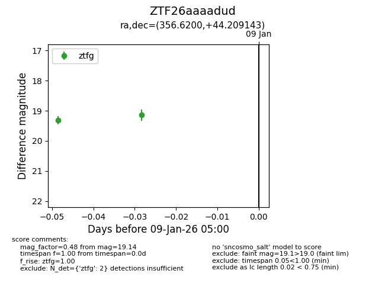
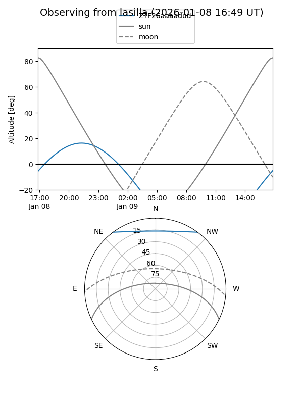
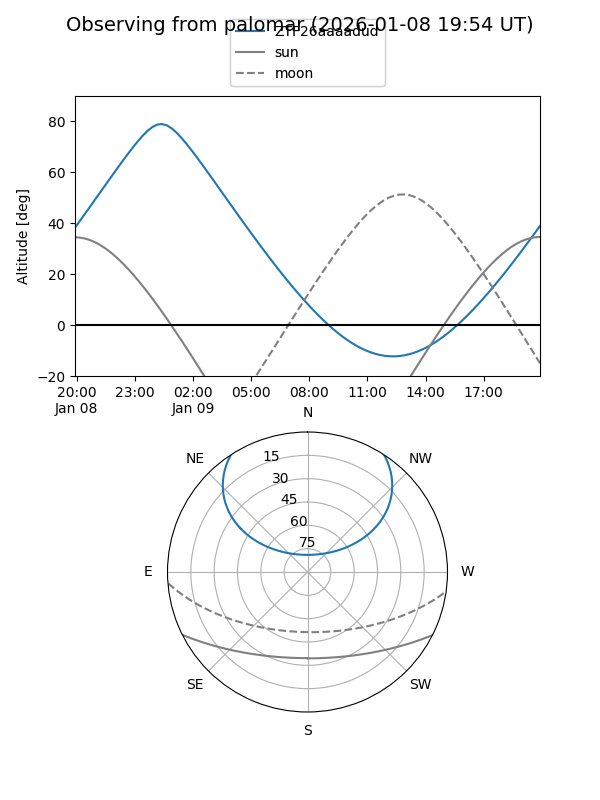

ZTF26aaaadud
Target ZTF26aaaadud at 2026-01-09 04:40
Aliases and brokers:
FINK:
Lasair:
ALeRCE:
alt names
ZTF26aaaadud (ztf,fink_ztf)
Coordinates:
equatorial (ra, dec) = 356.6200,+44.20914
equatorial (HMS+DMS) = 23:46:28.81,+44:12:32.91
galactic (l, b) = (110.8237,-17.13006)
Flags:
Photometry:
last ztfg=19.31
1 ztfg detections
Lightcurve

Visibility


Additional plots